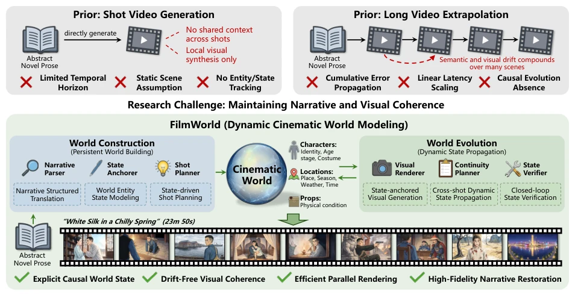
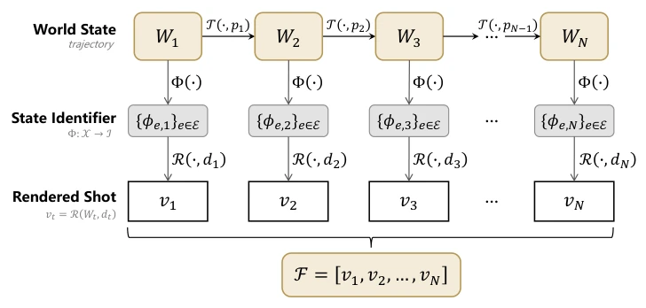
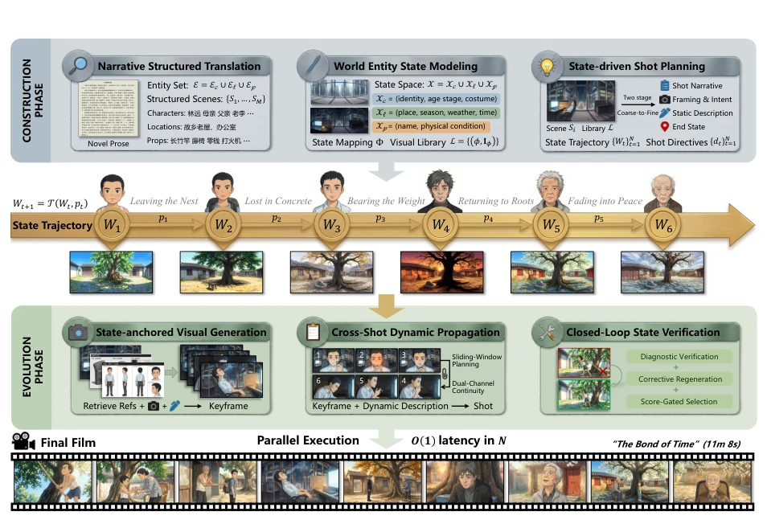
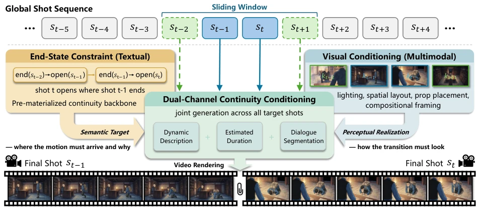
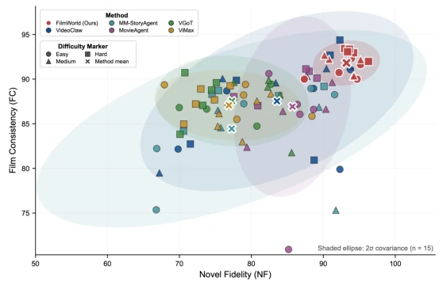
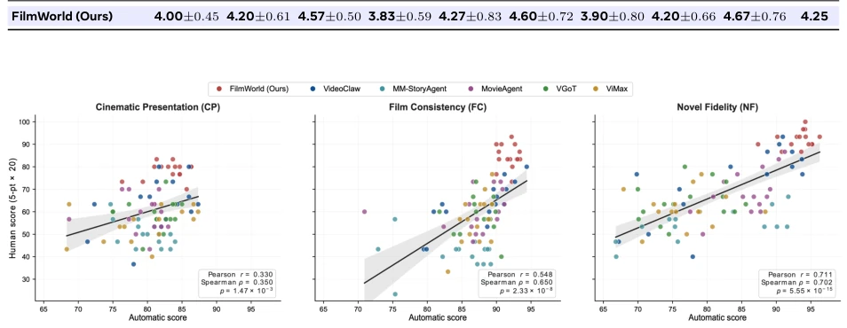
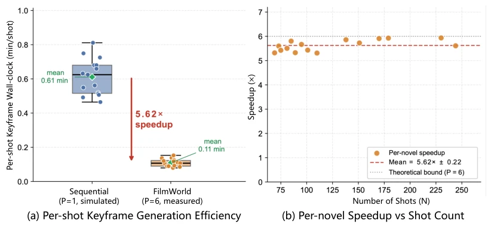
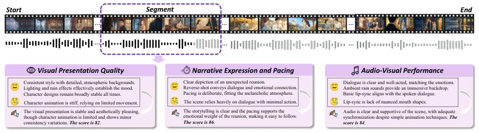
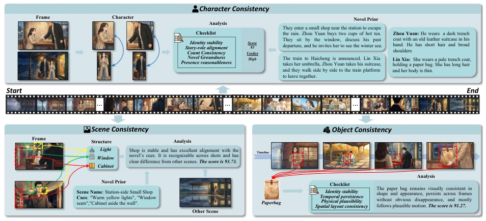
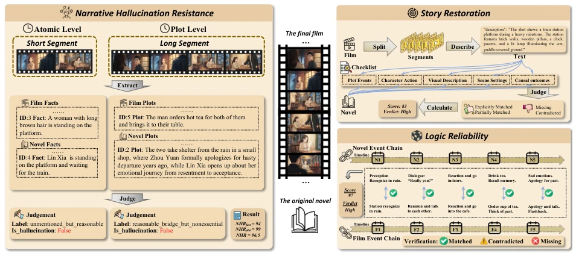

Adapting novels into films is considered the "Mount Everest" of generative AI. FilmWorld attempts to tackle the long-video consistency challenge using "dynamic movie world modeling", and the approach is indeed compelling. It decomposes generation into two stages: "construction" and "evolution", attempting to maintain causal consistency through Agent collaboration. The highlight lies in the parallel acceleration brought by explicit state externalization, theoretically reducing O(N) to O(1), which is a major breakthrough for long-video generation. However, there are also many drawbacks: relying on extensive LLM symbolic planning, once plot logic understanding deviates, subsequent visual generation collapses entirely; and the discretization of "world states" may lose subtle emotional changes. However, it is indeed stronger than pure end-to-end models in long-narrative consistency, at least no longer letting the protagonist get injured one second and be full of vigor the next, counting as a shot of adrenaline for the long-video generation community.
研究动机Motivation
现有视频生成模型（如 Sora [2]）多关注短片段，长视频生成面临语义漂移和状态丢失。现有 Agent 系统（如 MovieAgent [38], StoryAgent [10]）缺乏共享的“真理来源”来追踪跨镜头状态。长篇小说改编需要处理抽象文学语言到具体视觉的鸿沟，以及实体状态随情节演化的因果性。单纯外推现有模型会导致累积误差，无法维持跨场景的叙事连贯性。例如，若角色在早期场景受伤，后续场景若无显式状态追踪，模型无法可靠“知道”该角色应持续带伤，导致视觉与叙事断裂。
Existing video generation models (such as Sora [2]) mostly focus on short clips, while long-video generation faces semantic drift and state loss. Existing Agent systems (such as MovieAgent [38], StoryAgent [10]) lack a shared "source of truth" to track cross-shot states. Novel adaptation requires bridging the gap from abstract literary language to concrete visuals, and the causality of entity states evolving with the plot. Simply extrapolating existing models leads to cumulative errors and fails to maintain narrative coherence across scenes. For example, if a character is injured in an early scene, without explicit state tracking in subsequent scenes, the model cannot reliably "know" that the character should continue to be injured, leading to visual and narrative breaks.

Figure 1 Conceptual comparison of video generation paradigms for novel-to-film generation. Existing methods either synthesize shots independently without cross-shot state tracking (top-left) or extrapolate sequentially where semantic drift compounds over long narratives (top-right). FilmWorld (bottom) instead constructs a persistent cinematic world grounded in the source novel and evolves it through plot-driven state transitions, with construction-side and evolution-side agent groups jointly enforcing causal consistency and visual coherence across scenes.
FilmWorld formalizes the task as dynamic movie world modeling W = <E, X, Φ, T, R>. The pipeline is divided into two stages: 1. Construction Stage: Through narrative structured translation, entity state modeling (visual anchoring), and state-driven storyboard planning, the novel is transformed into world state trajectories {Wt} and storyboard instructions {dt}. The key innovation is using state identifiers Φ to anchor visual assets, avoiding repeated generation. 2. Evolution Stage: Rendering based on pre-constructed state trajectories. Dynamic state propagation across shots is performed via sliding windows, utilizing text-end state constraints and visual keyframes dual conditions to ensure continuity. Finally, errors are corrected through closed-loop verification. The core breakthrough is decoupling state evolution and visual rendering, achieving parallel rendering, allowing the next frame to be generated without waiting for the previous frame's output.

Figure 2 Schematic of the Dynamic Cinematic World evolution. At each shot step t, the world state Wt is advanced to Wt+1 via the transition function T (·, pt) conditioned on the plot event pt. The state mapping function Φ(·) maps each world state to a set of entity-level state identifiers {ϕe,t}e∈E, which are then passed to the rendering function R(·, dt) together with the shot directive dt to produce the visual shot vt.

Figure 3 Overview of the FilmWorld framework. Using a simplified world-state trajectory from the novel “The Bond of Time” for illustrative clarity, FilmWorld translates raw prose into films via a decoupled paradigm. In the Construction Phase, we parse narrative structures, anchor entity states to visual references and plan the global trajectory of states and shots. This trajectory explicitly tracks how consecutive plot events drive entity state updates. In the Evolution Phase, we render state-guided keyframes, propagate dynamic motion via sliding windows, and resolve discrepancies via closed-loop feedback. This decoupling enables parallel rendering with O(1) theoretical latency.

Figure 4 Illustration of the Cross-Shot Dynamic State Propagation mechanism. A scene-local sliding-window planner jointly synthesizes motion specifications for all target shots, enforcing cross-shot coherence via: 1) a pre-materialized textual end-state constraint, forming a continuity backbone where each shot’s opening derives from its predecessor’s terminal state; and 2) a visual conditioning channel supplying rendered keyframes as ordered multimodal inputs, constraining the perceptual realization of each transition in lighting, composition, spatial layout and so on.
Propose the FilmEval framework, containing 15 part-level novels (Easy/Medium/Hard) and 9 automatic metrics. Outperforms SOTA Agent systems (such as VideoClaw [9], ViMax [13]) in narrative fidelity and cross-scene consistency. Ablation studies verify the necessity of the construction and evolution mechanisms. In terms of efficiency, parallelization reduces the theoretical latency of the evolution stage from O(N) to O(1), with an actual speedup ratio reaching 5.62 times. The correlation between automatic scoring and human scoring is significant (r=0.711). Results indicate that explicit world state modeling can effectively mitigate the cumulative error problem in long-sequence generation.

Figure 8 Per-novel performance distribution on FilmEval. Each point represents a single novel evaluated under the corresponding difficulty tier, plotted in the Novel Fidelity–Film Consistency space. Shaded regions denote 2σ covariance ellipses estimated over all 15 novels. FilmWorld occupies the top-right region with the most compact ellipse, indicating both consistently superior performance and significantly lower inter-novel variance compared to all baselines.

Figure 9 Alignment between FilmEval automatic scores and human ratings. Each panel plots the per-film automatic score against the mean human rating (0–5 scaled to [0, 100]) for one metric group, with 90 paired points (15 novels × 6 systems) colored by system. The solid line is a linear fit and the shaded band its 95% confidence interval; Pearson r, Spearman ρ, and the two-sided p-value are annotated in each panel. All three groups are significantly positively correlated, and the agreement strengthens from CP (r = 0.330) to FC (r = 0.548) to NF (r = 0.711).

Figure 10 Computational efficiency and scalability of FilmWorld on keyframe generation. (a) Efficiency. Parallel execution (P=6) achieves a 5.62× mean speedup (93.7% of theoretical bound), reducing per-shot cost from 0.61 to 0.11 min/shot. Green diamonds mark means; dots are individual novels. (b) Scalability. Speedup stays within 5.62 × ±0.22 across N ∈[69, 244], showing no dependence on N and confirming the O(N/P) scaling. The sequential baseline (P=1) is simulated by accumulating per-shot API durations from the same runs.
其他图片Other Figures

Figure 5 Illustration of the cinematic presentation evaluation. Given a generated film, FilmEval partitions it into temporal segments and assesses each segment along three dimensions: Visual Presentation Quality (VP), Narrative Expression and Pacing (NEP), and Audio-Visual Performance Quality (AVP). For every dimension, the evaluator identifies both positive evidence and visible defects, and then assigns a fine-grained score.

Figure 6 Illustration of the film consistency evaluation. The Character Consistency (CC) module compares on-screen character appearances against a novel-derived character prior to rate identity stability and story alignment. The Scene Consistency (SC) module verifies whether recurring locations preserve stable structural anchors and remain distinguishable from other scenes. The Object Consistency (OC) module tracks salient objects across frames to rate their identity, temporal persistence, and spatial coherence.

Figure 7 Illustration of the novel fidelity evaluation. The Narrative Hallucination Resistance (NHR) module compares atomic facts and plot events from the film against the novel, flagging unsupported or incongruent content. The Logic Reliability (LR) module aligns the novel and film event chains to verify temporal order, causality, and character-action attribution, distinguishing matched, contradicted, and missing events. The Story Restoration (SR) module examines fine-grained details from a novel-derived checklist to quantify source coverage.